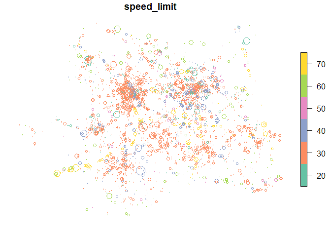
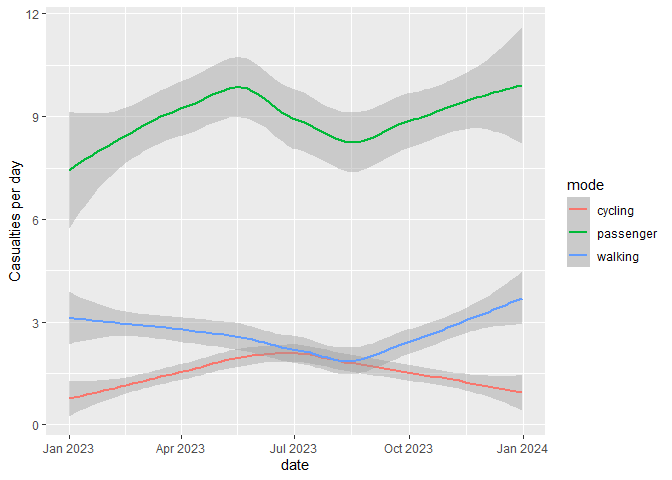
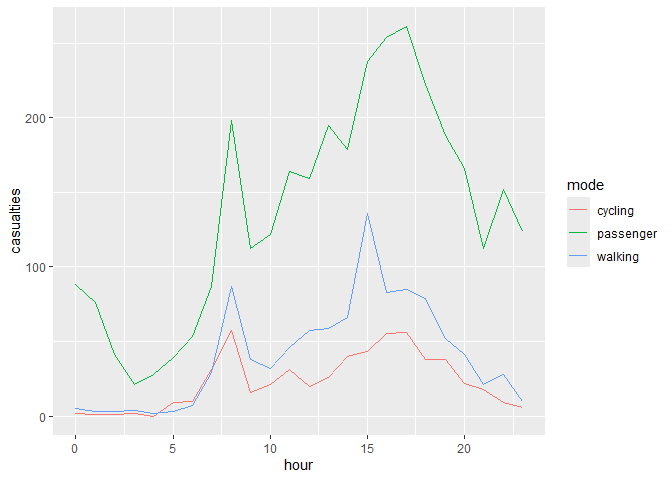

stats19 provides functions for downloading and formatting road crash data. Specifically, it enables access to the UK’s official road traffic casualty database, STATS19. (The name comes from the form used by the police to record car crashes and other incidents resulting in casualties on the roads.)
By default, stats19 downloads files to a temporary directory. You can change this behavior to save the files in a permanent directory. This is done by setting the STATS19_DOWNLOAD_DIRECTORY environment variable. A convenient way to do this is by adding STATS19_DOWNLOAD_DIRECTORY=/path/to/a/dir to your .Renviron file, which can be opened with usethis::edit_r_environ().
The raw data is provided as a series of .csv files. Finding, reading-in and formatting the data for research can be a time consuming process subject to human error. stats19 speeds up these vital but boring and error-prone stages of the research process with a single function: get_stats19(). By allowing public access to properly labelled road crash data, stats19 aims to make road safety research more reproducible and accessible.
For transparency and modularity, each stage can be undertaken separately, as documented in the stats19 vignette.
The package has now been peer reviewed and is stable, and has been published in the Journal of Open Source Software (Lovelace et al. 2019). Please tell people about the package, link to it and cite it if you use it in your work.
Installation
Install and load the latest version with:
remotes::install_github("ropensci/stats19")
library(stats19)
#> Data provided under OGL v3.0. Cite the source and link to:
#> www.nationalarchives.gov.uk/doc/open-government-licence/version/3/You can install the released version of stats19 from CRAN with:
install.packages("stats19")Load the development version of the package from this repository with:
devtools::load_all()get_stats19()
get_stats19() requires year and type parameters, mirroring the provision of STATS19 data files, which are categorised by year (from 1979 onward) and type (with separate tables for crashes, casualties and vehicles, as outlined below). The following command, for example, gets crash data from 2023 (note: we follow the “crash not accident” campaign of RoadPeace in naming crashes, and also adopted by the DfT since 2025):
crashes = get_stats19(year = 2023, type = "collision")
#> Files identified: dft-road-casualty-statistics-collision-2023.csv
#> Data saved at <tempdir>/dft-road-casualty-statistics-collision-2023.csv
#> Reading in: <tempdir>/dft-road-casualty-statistics-collision-2023.csv
#> date and time columns present, creating formatted datetime columnWhat just happened? For the year 2023 we read-in crash-level (type = "collision") data on all road crashes recorded by the police across Great Britain. The dataset contains 42 columns (variables) for 104,258 crashes. We were not asked to download the file (by default you are not asked to confirm the file that will be downloaded). The contents of this dataset, and other datasets provided by stats19, are outlined below and described in more detail in the stats19 vignette.
We will see below how the function also works to get the corresponding casualty and vehicle datasets for 2023. The package also allows STATS19 files to be downloaded and read-in separately, allowing more control over what you download, and subsequently read-in, with read_collisions(), read_casualties() and read_vehicles(), as described in the vignette.
Data download
Data files can be downloaded without reading them in using the function dl_stats19(). If there are multiple matches, you will be asked to choose from a range of options. Providing just the year, for example, will result in the following options:
dl_stats19(year = 2023, data_dir = tempdir())Multiple matches. Which do you want to download?
1: dft-road-casualty-statistics-casualty-2023.csv
2: dft-road-casualty-statistics-vehicle-2023.csv
3: dft-road-casualty-statistics-collision-2023.csv
Selection:
Enter an item from the menu, or 0 to exitTo download other years it is worth being aware of the file structure of the files, hosted by the DfT, this package imports. The last 5 years of data (usually released September for the previous year) are duplicated 3 times and available as individual years, or 1 file covering all 5 years. The data goes all the way back to 1979 (one of (if not the) the longest running collision statistics databases in the world). This data is stored in one very large file (~1GB) and also covers the last 5 years.
To request years using get_stats19 the following call structure can be used:
# one year (only available for years within last 5 years of data)
cas_2024 = get_stats19(year = 2024,type = "casualty")This will return a dataframe of just 2024.
# all of the last 5 years
cas_last_5_years = get_stats19(year = 5, type = "casualty")This will return a dataframe with all of the last 5 years.
To request specific year ranges use start_year:end_year:
# a year or so longer than last 5 years
cas_last_6_years = get_stats19(year = 2019:2024,type = "casualty")
cas_since_day_one = get_stats19(year = 1979:2024,type = "casualty")But be aware, even though the two calls above are very different ranges, because they are both earlier than the last 5 years, the full raw file will be downloaded to your temporary directory, which can take sometime. Future calls should use this same file, but get_stats19 also formats this local file, which can still take some time. So think carefully about how you intend to work with the data.
Using the data
STATS19 data consists of 3 main tables:
- Collisions, the main table which contains information on the crash time, location and other variables (37 columns in total)
- Casualties, containing data on people hurt or killed in each crash (21 columns in total)
- Vehicles, containing data on vehicles involved in or causing each crash (34 columns in total)
The contents of each is outlined below.
Crash data
Crash data was downloaded and read-in using the function get_stats19(), as described above.
Some of the key variables in this dataset include:
key_column_names = grepl(pattern = "severity|speed|pedestrian|light_conditions", x = names(crashes))
crashes[key_column_names]
#> # A tibble: 104,258 × 8
#> collision_severity speed_limit pedestrian_crossing_phys…¹ pedestrian_crossing
#> <chr> <chr> <chr> <chr>
#> 1 Slight 60 No physical crossing faci… No physical crossi…
#> 2 Slight 30 No physical crossing faci… No physical crossi…
#> 3 Serious 30 No physical crossing faci… No physical crossi…
#> 4 Slight 30 No physical crossing faci… No physical crossi…
#> 5 Slight 30 Pelican, puffin, toucan o… Pedestrian light c…
#> 6 Slight 20 No physical crossing faci… No physical crossi…
#> 7 Slight 20 No physical crossing faci… No physical crossi…
#> 8 Slight 30 No physical crossing faci… No physical crossi…
#> 9 Serious 20 No physical crossing faci… No physical crossi…
#> 10 Slight 30 Zebra Human crossing con…
#> # ℹ 104,248 more rows
#> # ℹ abbreviated name: ¹pedestrian_crossing_physical_facilities_historic
#> # ℹ 4 more variables: light_conditions <chr>,
#> # enhanced_severity_collision <dbl>,
#> # collision_adjusted_severity_serious <dbl>,
#> # collision_adjusted_severity_slight <dbl>For the full list of columns, run names(crashes) or see the vignette.
Casualties data
As with crashes, casualty data for 2023 can be downloaded, read-in and formatted as follows:
casualties = get_stats19(year = 2023, type = "casualty", ask = FALSE, format = TRUE)
#> Files identified: dft-road-casualty-statistics-casualty-2023.csv
#> Data saved at C:\Users\xxx\AppData\Local\Temp\RtmpisbAkG/dft-road-casualty-statistics-casualty-2023.csv
#> Reading in: C:\Users\xxx\AppData\Local\Temp\RtmpisbAkG/dft-road-casualty-statistics-casualty-2023.csv
nrow(casualties)
#> [1] 132977
ncol(casualties)
#> [1] 23The results show that there were 132,977 casualties reported by the police in the STATS19 dataset in 2023, and 23 columns (variables). Values for a sample of these columns are shown below:
casualties[c(4, 5, 6, 14)]
#> # A tibble: 132,977 × 4
#> vehicle_reference casualty_reference casualty_class bus_or_coach_passenger
#> <chr> <chr> <chr> <chr>
#> 1 1 1 Pedestrian Not a bus or coach pass…
#> 2 2 1 Driver or rider Not a bus or coach pass…
#> 3 1 1 Driver or rider Not a bus or coach pass…
#> 4 1 1 Driver or rider Not a bus or coach pass…
#> 5 2 2 Passenger Not a bus or coach pass…
#> 6 1 1 Driver or rider Not a bus or coach pass…
#> 7 1 1 Driver or rider Not a bus or coach pass…
#> 8 1 1 Pedestrian Not a bus or coach pass…
#> 9 2 1 Driver or rider Not a bus or coach pass…
#> 10 1 1 Driver or rider Not a bus or coach pass…
#> # ℹ 132,967 more rowsThe full list of column names in the casualties dataset is:
names(casualties)
#> [1] "collision_index" "collision_year"
#> [3] "collision_ref_no" "vehicle_reference"
#> [5] "casualty_reference" "casualty_class"
#> [7] "sex_of_casualty" "age_of_casualty"
#> [9] "age_band_of_casualty" "casualty_severity"
#> [11] "pedestrian_location" "pedestrian_movement"
#> [13] "car_passenger" "bus_or_coach_passenger"
#> [15] "pedestrian_road_maintenance_worker" "casualty_type"
#> [17] "casualty_imd_decile" "lsoa_of_casualty"
#> [19] "enhanced_casualty_severity" "casualty_injury_based"
#> [21] "casualty_adjusted_severity_serious" "casualty_adjusted_severity_slight"
#> [23] "casualty_distance_banding"Vehicles data
Data for vehicles involved in crashes in 2023 can be downloaded, read-in and formatted as follows:
vehicles = get_stats19(year = 2023, type = "vehicle", ask = FALSE, format = TRUE)
#> Files identified: dft-road-casualty-statistics-vehicle-2023.csv
#> Data saved at C:\Users\xxx\AppData\Local\Temp\RtmpisbAkG/dft-road-casualty-statistics-vehicle-2023.csv
#> Reading in: C:\Users\xxx\AppData\Local\Temp\RtmpisbAkG/dft-road-casualty-statistics-vehicle-2023.csv
nrow(vehicles)
#> [1] 189815
ncol(vehicles)
#> [1] 29The results show that there were 189,815 vehicles involved in crashes reported by the police in the STATS19 dataset in 2023, with 29 columns (variables). Values for a sample of these columns are shown below:
vehicles[c(3, 14:16)]
#> # A tibble: 189,815 × 4
#> collision_ref_no vehicle_leaving_carriageway hit_object_off_carriageway
#> <chr> <chr> <chr>
#> 1 481356437 Did not leave carriageway None
#> 2 440059930 Did not leave carriageway None
#> 3 401356150 Did not leave carriageway None
#> 4 131392428 Nearside Tree
#> 5 041363996 Did not leave carriageway None
#> 6 231388706 Did not leave carriageway None
#> 7 010427100 Did not leave carriageway None
#> 8 461304428 Did not leave carriageway None
#> 9 471348135 Did not leave carriageway None
#> 10 041288045 Nearside Lamp post
#> # ℹ 189,805 more rows
#> # ℹ 1 more variable: first_point_of_impact <chr>The full list of column names in the vehicles dataset is:
names(vehicles)
#> [1] "collision_index" "collision_year"
#> [3] "collision_ref_no" "vehicle_reference"
#> [5] "vehicle_type" "towing_and_articulation"
#> [7] "vehicle_manoeuvre" "vehicle_direction_from"
#> [9] "vehicle_direction_to" "vehicle_location_restricted_lane"
#> [11] "junction_location" "skidding_and_overturning"
#> [13] "hit_object_in_carriageway" "vehicle_leaving_carriageway"
#> [15] "hit_object_off_carriageway" "first_point_of_impact"
#> [17] "vehicle_left_hand_drive" "journey_purpose_of_driver"
#> [19] "sex_of_driver" "age_of_driver"
#> [21] "age_band_of_driver" "engine_capacity_cc"
#> [23] "propulsion_code" "age_of_vehicle"
#> [25] "generic_make_model" "driver_imd_decile"
#> [27] "lsoa_of_driver" "escooter_flag"
#> [29] "driver_distance_banding"Creating geographic crash data
An important feature of STATS19 data is that the collision table contains geographic coordinates. These are provided at ~10m resolution in the UK’s official coordinate reference system (the Ordnance Survey National Grid, EPSG code 27700). stats19 converts the non-geographic tables created by format_collisions() into the geographic data form of the sf package with the function format_sf() as follows:
crashes_sf = format_sf(crashes)
#> 12 rows removed with no coordinatesThe note arises because NA values are not permitted in sf coordinates, and so rows containing no coordinates are automatically removed. Having the data in a standard geographic form allows various geographic operations to be performed on it. The following code chunk, for example, returns all crashes within the boundary of West Yorkshire (which is contained in the object police_boundaries, an sf data frame containing all police jurisdictions in England and Wales).
library(sf)
#> Linking to GEOS 3.13.1, GDAL 3.11.4, PROJ 9.7.0; sf_use_s2() is TRUE
library(dplyr)
#>
#> Attaching package: 'dplyr'
#> The following objects are masked from 'package:stats':
#>
#> filter, lag
#> The following objects are masked from 'package:base':
#>
#> intersect, setdiff, setequal, union
wy = filter(police_boundaries, pfa16nm == "West Yorkshire")
#> old-style crs object detected; please recreate object with a recent sf::st_crs()
crashes_wy = crashes_sf[wy, ]
nrow(crashes_sf)
#> [1] 104246
nrow(crashes_wy)
#> [1] 4249This subsetting has selected the 4,249 crashes which occurred within West Yorkshire in 2023.
Joining tables
The three main tables we have just read-in can be joined by shared key variables. This is demonstrated in the code chunk below, which subsets all casualties that took place in Leeds, and counts the number of casualties by severity for each crash:
sel = casualties$collision_index %in% crashes_wy$collision_index
casualties_wy = casualties[sel, ]
names(casualties_wy)
#> [1] "collision_index" "collision_year"
#> [3] "collision_ref_no" "vehicle_reference"
#> [5] "casualty_reference" "casualty_class"
#> [7] "sex_of_casualty" "age_of_casualty"
#> [9] "age_band_of_casualty" "casualty_severity"
#> [11] "pedestrian_location" "pedestrian_movement"
#> [13] "car_passenger" "bus_or_coach_passenger"
#> [15] "pedestrian_road_maintenance_worker" "casualty_type"
#> [17] "casualty_imd_decile" "lsoa_of_casualty"
#> [19] "enhanced_casualty_severity" "casualty_injury_based"
#> [21] "casualty_adjusted_severity_serious" "casualty_adjusted_severity_slight"
#> [23] "casualty_distance_banding"
cas_types = casualties_wy %>%
select(collision_index, casualty_type) %>%
mutate(n = 1) %>%
group_by(collision_index, casualty_type) %>%
summarise(n = sum(n)) %>%
tidyr::spread(casualty_type, n, fill = 0)
cas_types$Total = rowSums(cas_types[-1])
cj = left_join(crashes_wy, cas_types, by = "collision_index")What just happened? We found the subset of casualties that took place in West Yorkshire with reference to the collision_index variable. Then we used functions from the tidyverse package dplyr (and spread() from tidyr) to create a dataset with a column for each casualty type. We then joined the updated casualty data onto the crashes_wy dataset. The result is a spatial (sf) data frame of crashes in Leeds, with columns counting how many road users of different types were hurt. The original and joined data look like this:
crashes_wy %>%
select(collision_index, collision_severity) %>%
st_drop_geometry()
#> # A tibble: 4,249 × 2
#> collision_index collision_severity
#> * <chr> <chr>
#> 1 2023131365503 Serious
#> 2 2023131379168 Serious
#> 3 2023131371604 Slight
#> 4 2023131265999 Serious
#> 5 2023131289452 Slight
#> 6 2023131309750 Slight
#> 7 2023131317107 Slight
#> 8 2023131360647 Slight
#> 9 2023131261256 Serious
#> 10 2023131299611 Serious
#> # ℹ 4,239 more rows
cas_types[1:2, c("collision_index", "Cyclist")]
#> # A tibble: 2 × 2
#> # Groups: collision_index [2]
#> collision_index Cyclist
#> <chr> <dbl>
#> 1 2023121345088 1
#> 2 2023122300320 1
cj[1:2, c(1, 5, 34)] %>% st_drop_geometry()
#> # A tibble: 2 × 3
#> collision_index latitude trunk_road_flag
#> * <chr> <dbl> <chr>
#> 1 2023131365503 53.8 Non-trunk
#> 2 2023131379168 53.8 Non-trunkMapping crashes
The join operation added a geometry column to the casualty data, enabling it to be mapped (for more advanced maps, see the vignette):
cex = cj$Total / 3
plot(cj["speed_limit"], cex = cex)
The spatial distribution of crashes in West Yorkshire clearly relates to the region’s geography. Crashes tend to happen on busy Motorway roads (with a high speed limit, of 70 miles per hour, as shown in the map above) and city centres, of Leeds and Bradford in particular. The severity and number of people hurt (proportional to circle width in the map above) in crashes is related to the speed limit.
STATS19 data can be used as the basis of road safety research. The map below, for example, shows the results of an academic paper on the social, spatial and temporal distribution of bike crashes in West Yorkshire, which estimated the number of crashes per billion km cycled based on commuter cycling as a proxy for cycling levels overall (more sophisticated measures of cycling levels are now possible thanks to new data sources) (Lovelace, Roberts, and Kellar 2016):

Time series analysis
We can also explore seasonal trends in crashes by aggregating crashes by day of the year:
library(ggplot2)
head(cj$date)
#> [1] "2023-10-21" "2023-11-01" "2023-11-06" "2023-01-20" "2023-03-22"
#> [6] "2023-05-21"
class(cj$date)
#> [1] "Date"
crashes_dates = cj %>%
st_set_geometry(NULL) %>%
group_by(date) %>%
summarise(
walking = sum(Pedestrian),
cycling = sum(Cyclist),
passenger = sum(`Car occupant`)
) %>%
tidyr::gather(mode, casualties, -date)
ggplot(crashes_dates, aes(date, casualties)) +
geom_smooth(aes(colour = mode), method = "loess") +
ylab("Casualties per day")
#> `geom_smooth()` using formula = 'y ~ x'
Different types of crashes also tend to happen at different times of day. This is illustrated in the plot below, which shows the times of day when people who were travelling by different modes were most commonly injured.
library(stringr)
crash_times = cj %>%
st_set_geometry(NULL) %>%
group_by(hour = as.numeric(str_sub(time, 1, 2))) %>%
summarise(
walking = sum(Pedestrian),
cycling = sum(Cyclist),
passenger = sum(`Car occupant`)
) %>%
tidyr::gather(mode, casualties, -hour)
ggplot(crash_times, aes(hour, casualties)) +
geom_line(aes(colour = mode))
Note that cycling manifests distinct morning and afternoon peaks (see Lovelace, Roberts, and Kellar 2016 for more on this).
Usage in research and policy contexts
Examples of how the package can been used for policy making include:
- Use of the package in a web app created by the library service of the UK Parliament. See commonslibrary.parliament.uk1 screenshots of which from December 2019 are shown below, for details.

Use of methods taught in the stats19-training vignette by road safety analysts at Essex Highways and the Safer Essex Roads Partnership (SERP) to inform the deployment of proactive front-line police enforcement in the region (credit: Will Cubbin).
Mention of road crash data analysis based on the package in an article on urban SUVs. The question of how vehicle size and type relates to road safety is an important area of future research. A starting point for researching this topic can be found in the
stats19-vehiclesvignette, representing a possible next step in terms of how the data can be used.
Next steps
There is much important research that needs to be done to help make the transport systems in many cities safer. Even if you’re not working with UK data, we hope that the data provided by stats19 data can help safety researchers develop new methods to better understand the reasons why people are needlessly hurt and killed on the roads.
The next step is to gain a deeper understanding of stats19 and the data it provides. Then it’s time to pose interesting research questions, some of which could provide an evidence-base in support policies that save lives. For more on these next steps, see the package’s introductory vignette.
Further information
The stats19 package builds on previous work, including:
- code in the bikeR repo underlying an academic paper on collisions involving cyclists
- functions in stplanr for downloading Stats19 data
- updated functions related to the CyIPT project